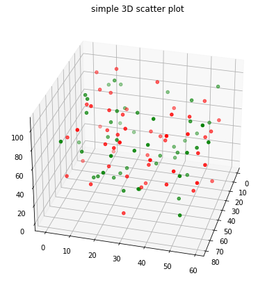
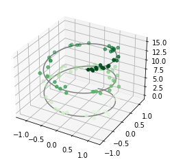
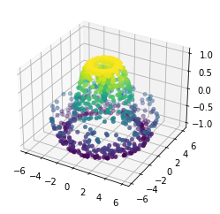

Exploratory Analysis using Visual Summaries¶
words
Scatter Plots¶
words
Contour Plots¶
A contour plot is …
Here we will do an example with a file that contains topographic data in XYZ format.
The file is pip-corner-sumps.txt
The first few lines of the file are
X-Easting Y-Northing Z-Elevation
74.90959724 93.21251922 0
75.17907367 64.40278759 0
94.9935575 93.07951286 0
95.26234119 64.60091165 0
54.04976655 64.21159095 0
54.52914363 35.06934342 0
75.44993558 34.93079513 0
Clearly NOT regular spaced in the X and Y axes. Here is a simple script to load the irregular data and interpolate onto a uniform spaced XYZ grid for plotting.
#Step 1: import needed modules to interact with the internet
import requests
#Step 2: make the connection to the remote file (actually its implementing "bash curl -O http://fqdn/path ...")
remote_url="http://54.243.252.9/ce-5319-webroot/ce5319jb/lessons/lesson8/pip-corner-sumps.txt" # set the url
response = requests.get(remote_url, allow_redirects=True)
#Step 3: read the file and store a copy locally
open('pip-corner-sumps.txt','wb').write(response.content);# extract from the remote the contents, assign to a local file same name
#Step 4: Read and process the file, generate the contour plot
# http://54.243.252.9/engr-1330-webroot/8-Labs/Lab07/Lab07.html
# https://clouds.eos.ubc.ca/~phil/docs/problem_solving/06-Plotting-with-Matplotlib/06.14-Contour-Plots.html
# https://docs.scipy.org/doc/scipy/reference/generated/scipy.interpolate.griddata.html
# https://stackoverflow.com/questions/332289/how-do-you-change-the-size-of-figures-drawn-with-matplotlib
# https://stackoverflow.com/questions/18730044/converting-two-lists-into-a-matrix
# https://stackoverflow.com/questions/3242382/interpolation-over-an-irregular-grid
# https://stackoverflow.com/questions/33919875/interpolate-irregular-3d-data-from-a-xyz-file-to-a-regular-grid
import pandas
my_xyz = pandas.read_csv('pip-corner-sumps.txt',sep='\t') # read an ascii file already prepared, delimiter is tabs
my_xyz = pandas.DataFrame(my_xyz) # convert into a data frame
#print(my_xyz) # activate to examine the dataframe
import numpy
import matplotlib.pyplot
from scipy.interpolate import griddata
# extract lists from the dataframe
coord_x = my_xyz['X-Easting'].values.tolist()
coord_y = my_xyz['Y-Northing'].values.tolist()
coord_z = my_xyz['Z-Elevation'].values.tolist()
coord_xy = numpy.column_stack((coord_x, coord_y))
# Set plotting range in original data units
lon = numpy.linspace(min(coord_x), max(coord_x), 200)
lat = numpy.linspace(min(coord_y), max(coord_y), 200)
X, Y = numpy.meshgrid(lon, lat)
# Grid the data; use linear interpolation (choices are nearest, linear, cubic)
Z = griddata(numpy.array(coord_xy), numpy.array(coord_z), (X, Y), method='nearest')
# Build the map
fig, ax = matplotlib.pyplot.subplots()
fig.set_size_inches(14, 7)
CS = ax.contour(X, Y, Z, levels = 12)
ax.clabel(CS, inline=2, fontsize=10)
ax.set_title('Contour Plot from Gridded Data File')
Text(0.5, 1.0, 'Contour Plot from Gridded Data File')
The gridded data contained is regularly spaced we can use a 3D point cloud plot to demonstrate.
# Import libraries
from mpl_toolkits import mplot3d
import numpy as np
import matplotlib.pyplot as plt
# Creating figure
fig = plt.figure(figsize = (10, 7))
ax = plt.axes(projection ="3d")
# Creating plot
ax.scatter3D(coord_x, coord_y, coord_z, color = "green")
#ax.scatter3D(x1, y1, z1, color = "red")
plt.title("simple 3D scatter plot")
zangle = 55
ax.view_init(30, zangle)
# show plot
plt.show()
Now repeat (in red) with the gridded data
# Import libraries
from mpl_toolkits import mplot3d
import numpy as np
import matplotlib.pyplot as plt
#
model_x = X.tolist()
model_y = Y.tolist()
model_z = Z.tolist()
#coord_x = my_xyz['X-Easting'].values.tolist()
# Creating figure
fig = plt.figure(figsize = (10, 7))
ax = plt.axes(projection ="3d")
# Creating plot
ax.scatter3D(model_x, model_y, model_z, color = "red")
#ax.scatter3D(x1, y1, z1, color = "red")
plt.title("simple 3D scatter plot")
zangle = 85
ax.view_init(30, zangle)
# show plot
plt.show()
# Import libraries
from mpl_toolkits import mplot3d
import numpy as np
import matplotlib.pyplot as plt
# Create datasets
z = np.random.randint(100, size =(50))
x = np.random.randint(80, size =(50))
y = np.random.randint(60, size =(50))
z1 = np.random.randint(110, size =(50))
x1 = np.random.randint(80, size =(50))
y1 = np.random.randint(60, size =(50))
# Creating figure
fig = plt.figure(figsize = (10, 7))
ax = plt.axes(projection ="3d")
# Creating plot
ax.scatter3D(x, y, z, color = "green")
ax.scatter3D(x1, y1, z1, color = "red")
plt.title("simple 3D scatter plot")
zangle = 15
ax.view_init(30, zangle)
# show plot
plt.show()

from mpl_toolkits import mplot3d
%matplotlib inline
import numpy as np
import matplotlib.pyplot as plt
fig = plt.figure()
ax = plt.axes(projection='3d')
#ax = plt.axes(projection='3d')
# Data for a three-dimensional line
zline = np.linspace(0, 15, 1000)
xline = np.sin(zline)
yline = np.cos(zline)
ax.plot3D(xline, yline, zline, 'gray')
# Data for three-dimensional scattered points
zdata = 15 * np.random.random(100)
xdata = np.sin(zdata) + 0.1 * np.random.randn(100)
ydata = np.cos(zdata) + 0.1 * np.random.randn(100)
ax.scatter3D(xdata, ydata, zdata, c=zdata, cmap='Greens');

def f(x, y):
return np.sin(np.sqrt(x ** 2 + y ** 2))
theta = 2 * np.pi * np.random.random(1000)
r = 6 * np.random.random(1000)
x = np.ravel(r * np.sin(theta))
y = np.ravel(r * np.cos(theta))
z = f(x, y)
ax = plt.axes(projection='3d')
ax.scatter3D(x, y, z, c=z, cmap='viridis', linewidth=0.5);

Surface plots render the points as facets on a surface, or as a wireframe. Somethimes this is a useful way to detect relationships.
# Import libraries
from mpl_toolkits import mplot3d
import numpy as np
import matplotlib.pyplot as plt
# Creating dataset
x = np.outer(np.linspace(-3, 3, 32), np.ones(32))
y = x.copy().T # transpose
z = (np.sin(x **2) + np.cos(y **2) )
##x = X
##y = Y
##z = Z
# Creating figure
fig = plt.figure(figsize =(14, 9))
ax = plt.axes(projection ='3d')
# Creating color map
my_cmap = plt.get_cmap('hot')
# Creating plot
surf = ax.plot_surface(x, y, z,
rstride = 8,
cstride = 8,
alpha = 0.8,
cmap = my_cmap)
cset = ax.contourf(x, y, z,
zdir ='z',
offset = np.min(z),
cmap = my_cmap)
cset = ax.contourf(x, y, z,
zdir ='x',
offset =-5,
cmap = my_cmap)
cset = ax.contourf(x, y, z,
zdir ='y',
offset = 5,
cmap = my_cmap)
fig.colorbar(surf, ax = ax,
shrink = 0.5,
aspect = 1)
# Adding labels
ax.set_xlabel('X-axis')
ax.set_xlim(-5, 5)
ax.set_ylabel('Y-axis')
ax.set_ylim(-5, 5)
ax.set_zlabel('Z-axis')
ax.set_zlim(np.min(z), np.max(z))
ax.set_title('3D surface having 2D contour plot projections')
# show plot
plt.show()
remote_url="http://54.243.252.9/ce-5319-webroot/ce5319jb/lessons/lesson8/HighestGrossingMovies.csv" # set the url
response = requests.get(remote_url, allow_redirects=True) # get the remote resource, follow imbedded links
open('HighestGrossingMovies.csv','wb').write(response.content); # extract from the remote the contents, assign to a local file same name
Movies = pandas.read_csv("HighestGrossingMovies.csv")
Budget = Movies['Budget_million$']
print("Mean Budget $",Budget.mean()," million USD")
Mean Budget $ 115.66 million USD
A couple of other ways to get the mean values are:
Box Plots¶
Histograms¶
words
Violin Plots¶
words
import seaborn
seaborn.set(style = 'whitegrid')
tip = seaborn.load_dataset('tips')
seaborn.violinplot(x ='day', y ='tip', data = tip)
<AxesSubplot:xlabel='day', ylabel='tip'>
Kernel Density Estimator Plots¶
words